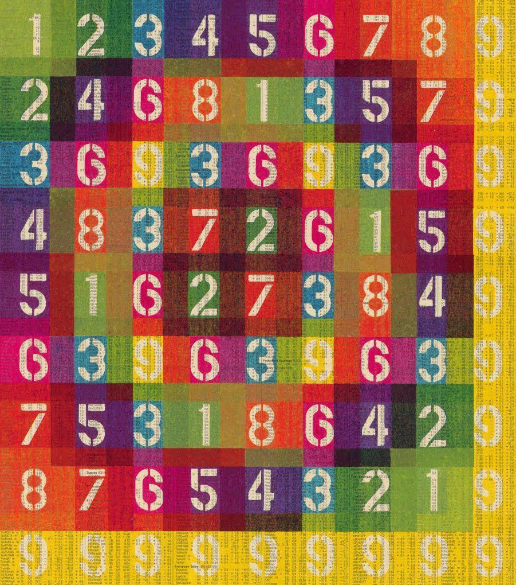
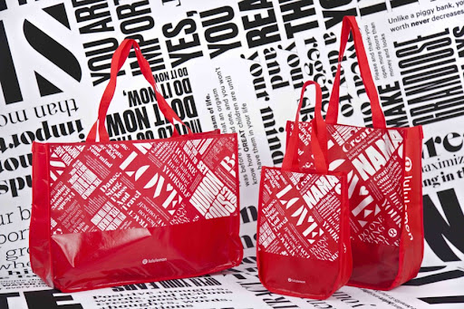
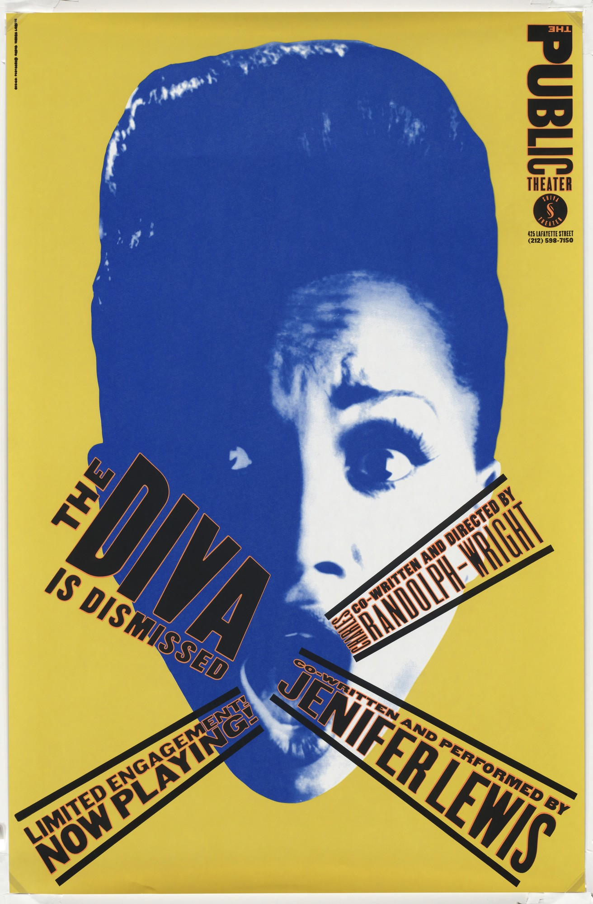
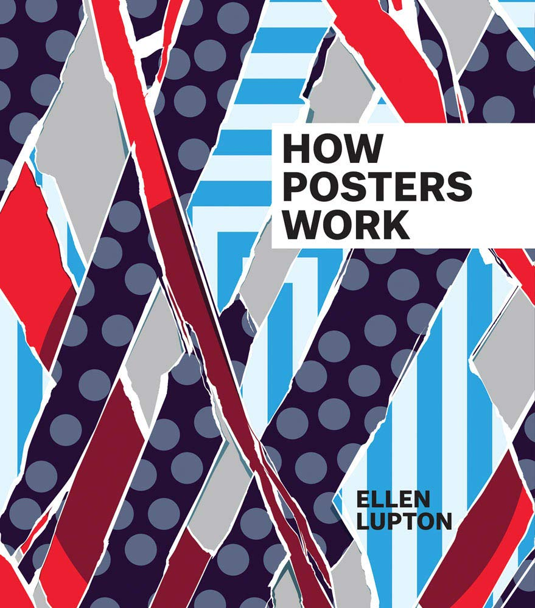

Vision and Motion
Karel Martens
1/14/2022
In Karel Martens' brand new show, he uses Japanese paper folding and origami techniques to deal with themes of absence and curiosity.

Process and Improvisation
Eddie Opara
7/19/2022
Eddie Opara details his artistic process and discusses how improvisation can improve a design.

Mapping the World
Paula Scher
9/23/2022
Paula Scher creates representations of real places through design, from maps to abstract posters.

How Posters Work
Ellen Lupton
12/3/2022
Ellen Lupton goes over the fundamentals of good poster design, from creating meaningful graphics to typesetting.